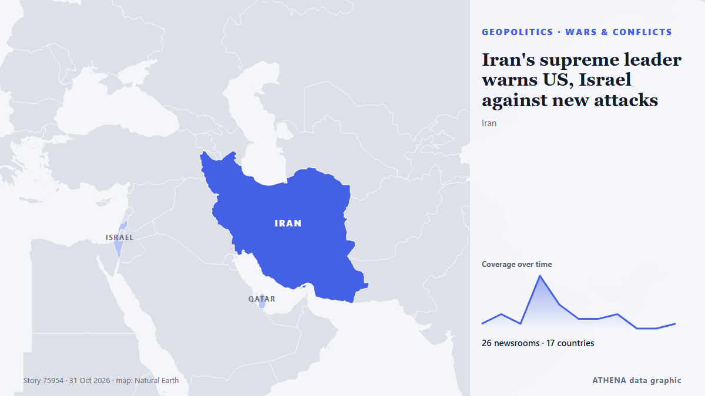

Guerres et conflits
| 18 oct. | 0 |
|---|---|
| 19 oct. | 1 |
| 20 oct. | 1 |
| 21 oct. | 0 |
| 22 oct. | 0 |
| 23 oct. | 3 |
| 24 oct. | 0 |
| 25 oct. | 3 |
| 26 oct. | 3 |
| 27 oct. | 4 |
| 28 oct. | 2 |
| 29 oct. | 1 |
| 30 oct. | 2 |
| 31 oct. | 2 |
Les titres sont affichés en anglais, tels que publiés.

Iran's supreme leader warns US, Israel against new attacks
Mojtaba Khamenei issued the warning following threats from the Islamic republic's foes of a possible resumption of strikes. de Free Malaysia Today
Greek container ship sinks after drone attack off Bulgaria
A Greek container ship has sunk after being hit by naval drones off Bulgaria on Wednesday, the Bulgarian government said, in the latest of a series of strikes on ships in the western Black Sea this… de Cyprus Mail
North Korea fires 'around a dozen' ballistic missiles into East Sea
North Korea launches around a dozen short-range ballistic missiles from Wonsan area of North Korea towards the Sea of Japan. de CNA (Channel NewsAsia)
‘Horrific’ Russian drone strike kills 14 at Ukraine train station
Another 14 people were wounded, including an 11-year-old boy and a man who had “both legs amputated”. de The Straits Times
Yemen's Houthis say they attacked Saudi Ras Tanura refinery, no Saudi confirmation
Yemen's Houthis claimed attacks on three Saudi oil facilities and two international airports. de The Jerusalem Post
Ukraine pauses strikes on Russian refineries after US pressure: Report
Ukraine is ready to stop strikes on Russian oil refining infrastructure if Russia refrains from attacking our power grid. de Ukrinform (English)
Iran says discussing plan with mediators to end war, reopen Hormuz
A Qatari delegation visited Tehran on Sunday for talks to review developments including the latest on negotiations, Hormuz and energy supplies. de Free Malaysia Today
After years under fire, a rare quiet settles over Ukrainian city as truce holds
KHERSON, Ukraine (AP) — A planned six-day ceasefire brokered by U.S. first lady Melania Trump and tied to a humanitarian aid mission in a Russian-occupied town has brought rare quiet to the… de The Canadian Press (via CityNews)
El Salvador sends 2,000 troops to Haiti to rescue four missing soldiers
A U.N.-backed force sent to combat gang violence said it was looking for the soldiers, who were in a gang-controlled area when they were attacked. de The New York Times (World)
US warns allies of possible Iran strikes after midterms: Report
Tensions across the Middle East remain high, with the United States reportedly preparing for potentially major military operations against Iran following the US midterm elections, while fighting… de CGTN (World)
Sudan: UN, France Condemn Escalating Drone Attacks Across Sudan
A drone strike on a cattle market in Sudan’s Nyala has killed 30 people and wounded 47, as fighting between the army and the RSF intensifies. de The New Arab
Russia, Ukraine say Oleshky demining operations complete, humanitarian operation to proceed
The localised ceasefire was announced on Oct 23. de The Straits Times
Houthis strike Yemen's Aden airport after evacuation warning
ADEN/DUBAI, Oct 28 - Yemen's Houthis attacked Aden airport on Wednesday, government officials said, after the Iran-aligned group warned people to evacuate the facility as fighting escalated in the… de The Straits Times
Israeli drone strike kills two in central Gaza
Several people wounded in Israeli strike on tent sheltering displaced Gazans, Wafa reports Several displaced Gazans were injuries on Thursday evening following an Israeli strike west of Gaza City… de Middle East Eye
Algeria to send troops to Niger in first foreign deployment since 1973
ALGIERS, Oct 25 - Algeria's parliament approved a resolution on Sunday authorising the deployment of army units to Niger, a parliamentary statement said, in what would mark Algeria's first foreign… de The Straits Times
Romania blames Russia for drone that sinks cargo ship; 1 killed, 3 missing
Romania’s rescue operation recovered nine people and one deceased body from a distressed ship in the Black Sea, while three remain missing. de Arab News
Syria and Jordan reopen border crossing after deadly air strikes
Jordanian armed forces carried out strikes on "militant hideouts" in Syria that it said were linked to a deadly church attack on the kingdom last week. de DW English
UN inquiry says Israel kept committing genocide in Gaza after truce
GENEVA, Oct 26 - Israel continued to commit genocide in Gaza after last October's US-brokered ceasefire in the enclave, a UN commission said in a report published on Monday that Israel dismissed as… de The Straits Times
Inside Tehran talks: Iranians link Houthi de-escalation to US approval of regional truce
A day after Saudi Arabia and its two defence-pact partners sent senior officials to Tehran, sources say the clearest outcome is a promise to keep talking, not a deal to de-escalate on any front… de The National